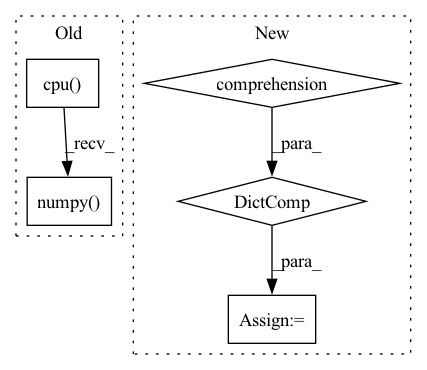

Pattern ID :18698
Before Change
param.data += delta_weight[idx]
idx += 1
model_param = [param.data.cpu().numpy() for param in model.state_dict().values()]
results = {"clientId":clientId, "moving_loss": epoch_train_loss,
"trained_size": completed_steps*conf.batch_size, "success": completed_steps > 0}After Change
idx += 1
state_dicts = model.state_dict()
model_param = {p:state_dicts[p].data.cpu().numpy() for p in state_dicts}
results = {"clientId":clientId, "moving_loss": epoch_train_loss,
"trained_size": completed_steps*conf.batch_size, "success": completed_steps > 0}
results["utility"] = math.sqrt(epoch_train_loss)*float(trained_unique_samples)In pattern: SUPERPATTERN
Frequency: 3
Non-data size: 5
Instances Fragment ID: 60905043
Project Name: symbioticlab/fedscale
Commit Name: c83c2512483023b4557d124888aec637a04fa978
Time: 2022-05-26
Author: fanlai0@outlook.com
File Name: examples/poisoning_setting/customized_client.py
M Class Name: Customized_Client
N Class Name: Customized_Client
M Method Name: train(4)
N Method Name: train(4)
M Parent Class: Client
N Parent Class: Client
M File Name: examples/poisoning_setting/customized_client.py
N File Name: examples/poisoning_setting/customized_client.py
M Start Line: 95
M End Line: 95
N Start Line: 95
N End Line: 96
Before Change
monitor = {}
for m_m in self.metrics_meter:
self.metrics_meter[m_m].update(metrics[m_m].cpu().detach().numpy() , data_loader.batch_size)
monitor[m_m] = self.metrics_meter[m_m].avg
if self.model_state == enums.ModelState.TRAIN:
self.current_train_step += 1After Change
losses.update(loss.item() * self.config.gradient_accumulation_steps, data_loader.batch_size)
elif self._model_state == enums.ModelState.VALID:
if self.valid_batch_index == 0:
self.valid_meter = {k: AverageMeter() for k in metrics}
losses.update(loss.item(), data_loader.batch_size)
else:
raise ValueError("Invalid model state")
Fragment ID: 60905044
Project Name: abhi1thakur/tez
Commit Name: f1c2b3c582a5c0c298458bb76ec4a7a8ed01b420
Time: 2022-07-06
Author: abhishek4@gmail.com
File Name: tez/model/tez.py
M Class Name: Tez
N Class Name: Tez
M Method Name: _update_loss_metrics(5)
N Method Name: _update_loss_metrics(5)
M Parent Class:
N Parent Class:
M File Name: tez/model/tez.py
N File Name: tez/model/tez.py
M Start Line: 370
M End Line: 383
N Start Line: 414
N End Line: 431
Before Change
self.update(bboxes, labels, scores, embeddings, **kwargs)
self.frame += 1
track_bboxes = [x.bbox.cpu().clone().numpy() for x in self.tracks if x.active]
track_ids = [x.track_id for x in self.tracks if x.active]
out["bboxes"].append(track_bboxes)
out["track_ids"].append(track_ids)After Change
// gather new detections and their embeddings
new_detections = self.model.decode_tracking(heatmap, box_2d, reid, nms_kernel=nms_kernel, num_detections=num_detections, normalize_bbox=True)
new_detections = {k: v.cpu().numpy() for k,v in new_detections.items()}
out = {"bboxes": [], "track_ids": []}
for b in range(images.shape[0]):
bboxes = new_detections["bboxes"][b] Fragment ID: 60905036
Project Name: gau-nernst/centernet-lightning
Commit Name: 3b833eb2f77f472d114feebee54d0a07b6a3ca84
Time: 2021-08-04
Author: gau.nernst@yahoo.com.sg
File Name: src/models/tracker.py
M Class Name: Tracker
N Class Name: Tracker
M Method Name: step_batch(2)
N Method Name: step_batch(2)
M Parent Class:
N Parent Class:
M File Name: src/models/tracker.py
N File Name: src/models/tracker.py
M Start Line: 110
M End Line: 110
N Start Line: 85
N End Line: 97